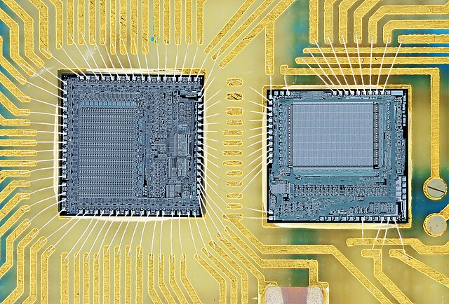

Semiconductors – Actor Analysis
Goal
This project analyzes the global semiconductor supply chain through a strategic actor lens to assess risks and resilience for the European Union. It aims to understand how public and private actors interact in the geopolitical competition over microchip production capacities and how their strategies affect long-term technological sovereignty withn the European Union.
Methods
The analysis uses Social Network Analysis (SNA) to map and visualize interdependencies between states and firms in the semiconductor domain. Key actors and their influence levels are derived from centrality metrics. Additionally, a Game Theoretic coordination model was developed to explore strategic decisions between major global players (U.S., EU). The game revealed how competitive subsidies and strategic substitution drive national investments, despite cooperative inefficiencies.
Skills Developed
- Social Network Analysis: Developed the ability to model and interpret actor relationships and dependencies within complex systems.
- Game Theoretic Reasoning:Strengthened my analytical toolkit to explore strategic behavior and decision-making under interdependence.
- Strategic Thinking:Applied strategic actor modeling to capture interdependent dynamics in decision-arenas.
- Qualitative Structuring: Translated complex actor motivations into actionable policy narratives.
- Stakeholder Analysis: Gained experience in identifying power structures and designing multi-actor engagement strategies.
- Policy Communication: Communicated insights through structured mapping and evidence-based recommendations.